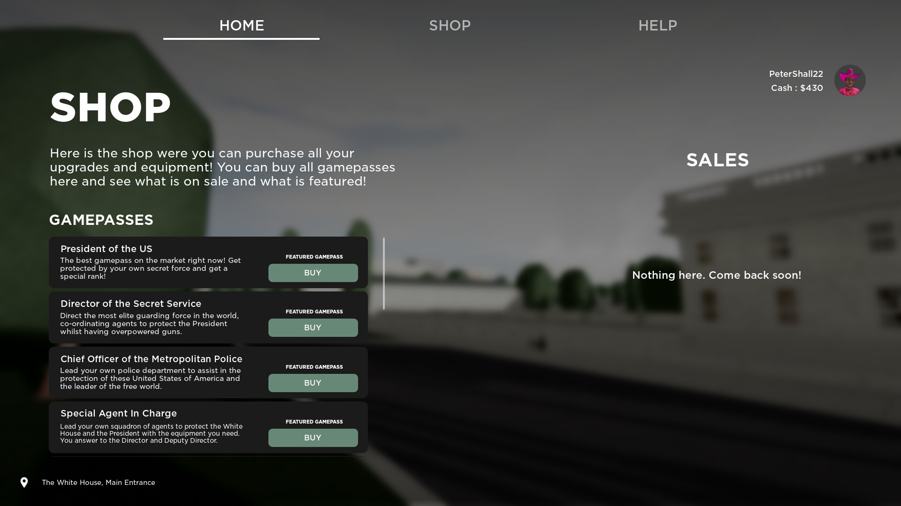
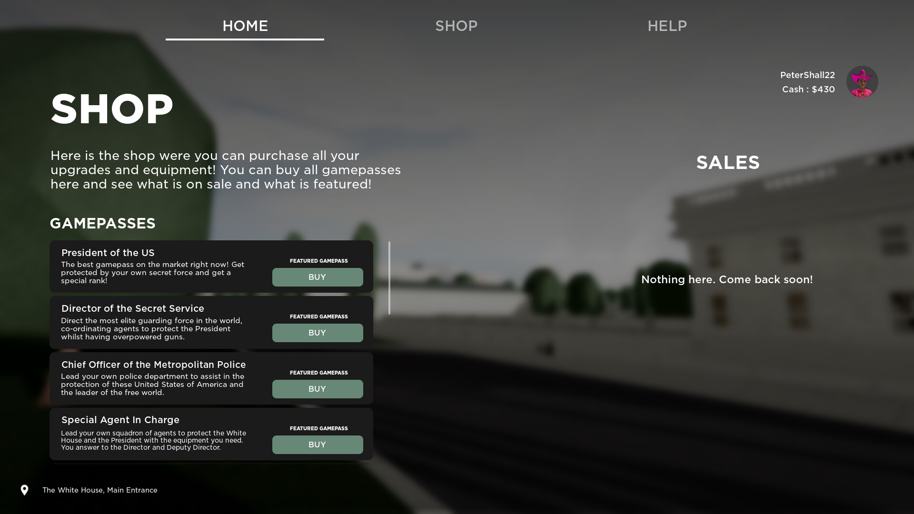

White House Simulator
White House Simulator is a Roblox game that immerses players in the world of American roleplay, allowing them to take on the role of a politician and navigate the complexities of running a country or becoming a criminal.
The game has a variety of features, including a detailed map of the White House, various political roles to choose from, and a range of activities to engage in as well as car and gun dealerships.
 
